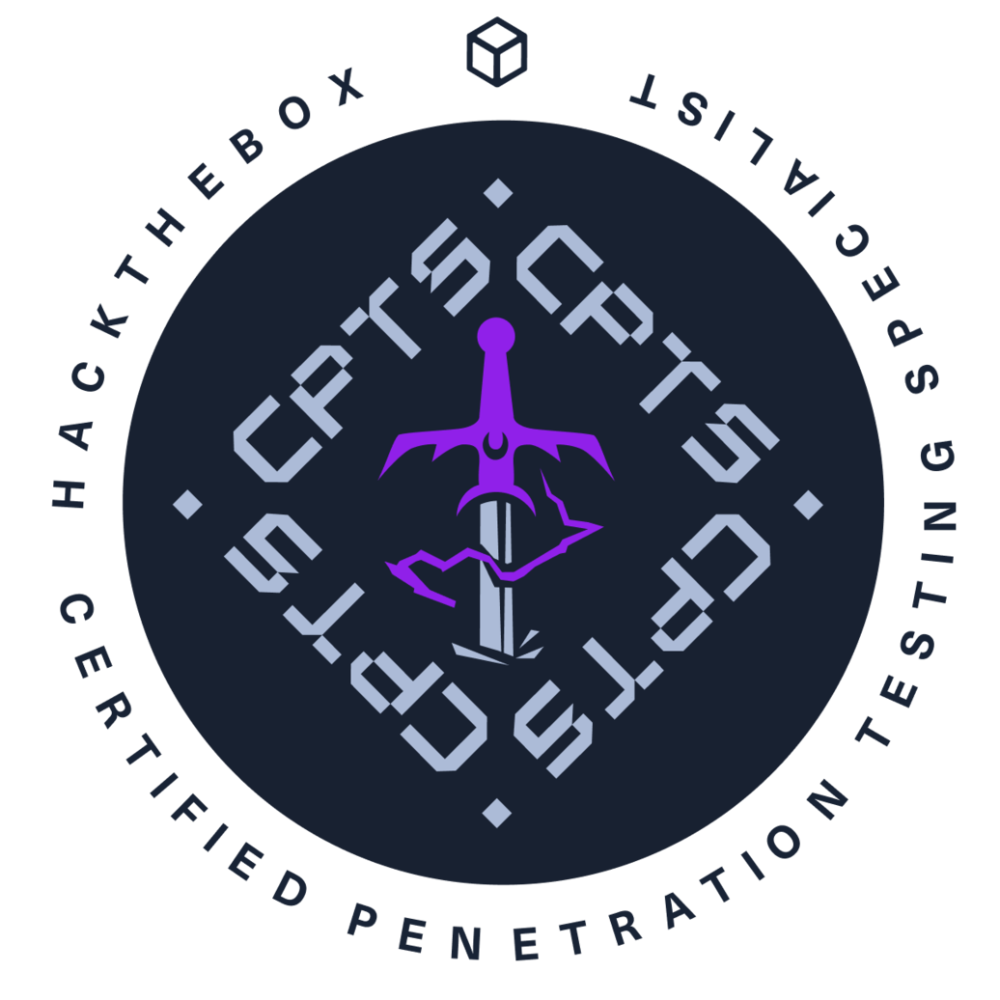
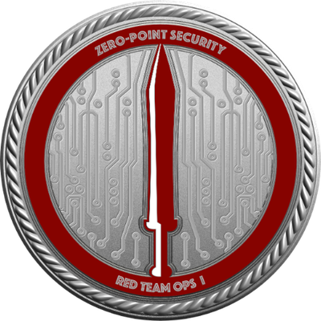

██ ▄█▀ ██▓███
██▄█▒ ▓██░ ██▒
▓███▄░ ▓██░ ██▓▒
▓██ █▄ ▒██▄█▓▒ ▒
▒██▒ █▄▒██▒ ░ ░
▒ ▒▒ ▓▒▒▓▒░ ░ ░
░ ░▒ ▒░░▒ ░
░ ░░ ░ ░░
░ ░
╓ ╖ ═╣ About ╠══════════════════════════════════════════════════════════════════════ ╙ ╜
Hey, I'm Kipair. My focus is mostly on penetration testing, offensive security research, and red team tradecraft.
I spend a lot of time digging into threat intelligence reports, dissecting C2 mechanics, and writing about niche offensive concepts that don't get covered much elsewhere.
I'm currently leading technical instruction for my college's cybersecurity club, where I run weekly hands-on workshops covering CTF fundamentals, Linux, active directory, and pentesting methodology.
╓ ╖ ═╣ Certifications ╠═════════════════════════════════════════════════════════════ ╙ ╜

Certified Penetration Testing Specialist (CPTS)
[In Progress] Certified Red Team Operator (CRTO)